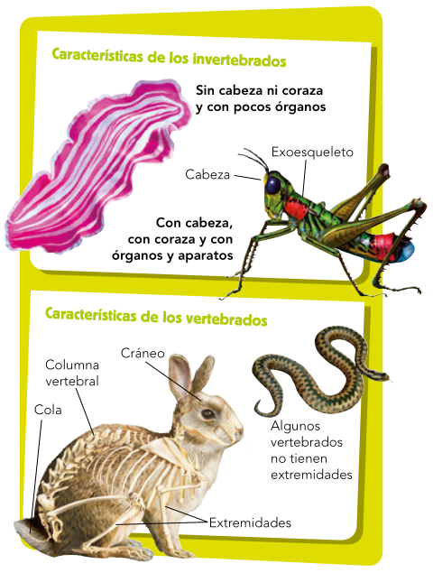

La zoología divide el reino de los animales en numerosos grupos. En función de su estructura corporal, hay dos grandes tipos de animales: los invertebrados y los vertebrados (Figura ![[*]](crossref.png) ).
).
Figura:
Características de los animales
|

|
Los invertebrados (Figura: )
La mayor parte de los animales son invertebrados. Hay muchos tipos; los más conocidos son los poríferos, los cnidarios, los anélidos, los equinodermos, los moluscos y los artrópodos. Todos ellos carecen de un esqueleto interno con columna vertebral, pero su organización corporal puede ser diversa:
- Los más simples, como las medusas, no tienen cabeza diferenciada y muy pocos órganos.
- Los más complejos, como los insectos, suelen tener una cabeza definida, con boca, y órganos y aparatos variados bien diferenciados.
Muchos tienen conchas, corazas, caparazones o exoesqueletos que protegen su cuerpo. Hay numerosos grupos:
- Los poríferos. Los poríferos o esponjas son acuáticos y muy sencillos. Su cuerpo, gelatinoso o fibroso, está perforado por numerosos poros y atravesado por canales. Viven fijos en los fondos.
- Los cnidarios. Los cnidarios, como las medusas, las anémonas o los corales, son acuáticos. Su cuerpo tiene forma de saco, con una única abertura o boca. Se alimentan de otros animales, que atrapan gracias a unos tentáculos venenosos que rodean la boca. Toman el oxígeno del agua por toda la superficie del cuerpo.
- Los anélidos. Hay anélidos acuáticos, como las sanguijuelas, o terrestres como las lombrices. Tienen un cuerpo largo, delgado y musculoso, dividido en anillos. Casi todos tienen una cabeza definida, con una boca que puede tener piezas duras. Toman oxígeno por toda la superficie de su cuerpo.
- Los equinodermos. Los equinodermos, como las estrellas o los erizos de mar, son marinos. Su cuerpo, sin cabeza, está cubierto por unas placas espinosas. En su interior, hay un sistema de tubos llenos de líquido, que acaban en pequeños tentáculos que salen al exterior, con los que se desplazan, se alimentan o respiran.
- Los moluscos. Entre los moluscos se incluyen animales terrestres o acuáticos. Son los caracoles, las babosas, los mejillones, los pulpos, los calamares... Estos seres tienen el cuerpo dividido en tres partes: cabeza, masa visceral y pie.
- La cabeza. Está más o menos definida según las especies y cuenta con una boca que puede tener dientes o picos para trocear el alimento y órganos de los sentidos para percibir olores, sabores, luz, contacto, etc.
- La masa visceral. Contiene los órganos internos y está cubierta por una pared carnosa llamada manto.
- El pie. Es un órgano locomotor muy musculoso que puede tener formas muy diversas (aplanada, de hacha, de corona de tentáculos) según los diferentes tipos de moluscos.
El cuerpo de muchos moluscos está recubierto por una concha, aunque otros carecen de ella. Los moluscos acuáticos toman oxígeno del agua mediante branquias. Los terrestres lo obtienen del aire a través de una cavidad respiratoria que funciona como un pulmón muy simple.
- Los artrópodos. El cuerpo de los artrópodos está cubierto por un exoesqueleto articulado; es decir, una coraza de piezas rígidas unidas por juntas flexibles. También tienen una cabeza diferenciada y un tronco segmentado con varios pares de patas.
- La cabeza. En ella están los órganos de los sentidos. Destacan las antenas o los palpos, que son los órganos del olfato y del tacto. Los órganos de la visión constan de dos o más ojos simples (formados por una sola lente sencilla) o de dos ojos compuestos (formados por numerosas lentes que funcionan juntas).
- El tronco. Está dividido en más o menos partes o segmentos según el tipo de artrópodo. Contiene los órganos internos y de él salen las patas y, en algunos insectos, las alas.
- Las patas. Salen de los segmentos del tronco y pueden tener diversas formas dependiendo de si sirven para el desplazamiento, para agarrarse, para la locomoción... Su número varía en los diferentes grupos de artrópodos.
Muchos artrópodos acuáticos tienen branquias. Los demás toman oxígeno del aire mediante finos tubos, las tráqueas, abiertos al exterior y comunicados con sus órganos internos.
Los vertebrados (Figura )
Los animales de este grupo son menos numerosos pero más complejos que los invertebrados. Son los peces, los anfibios, los reptiles, las aves y los mamíferos. Tienen esqueleto interno con:
- Una columna vertebral que recorre el tronco y se prolonga, casi siempre, en una cola.
- Un cráneo rígido en la cabeza, que protege el cerebro. En la cabeza se hallan la boca y muchos de los órganos de los sentidos.
- Cuatro extremidades de diversa morfología, aunque en algunas especies faltan.
Hay cinco grupos de vertebrados: peces, anfibios, reptiles, aves y mamíferos.
- Los peces. Los peces son animales acuáticos. Su cuerpo está cubierto de escamas y tiene forma hidrodinámica, lo que favorece su avance en el agua. En el tronco y en las extremidades tienen aletas para impulsarse y maniobrar. Los peces toman el oxígeno disuelto en el agua gracias a las branquias. Casi todos los peces son ovíparos y ponen los huevos en el agua. Estos no tienen cáscara, de modo que se secarían en tierra.
- Los anfibios. Los anfibios son animales terrestres, pero deben vivir cerca de medios acuáticos o húmedos, ya que su piel fina y desnuda tiende a desecarse. Suelen tener cuatro patas y dedos sin uñas. Son carnívoros. Respiran el oxígeno del agua a través de la piel. Muchos tienen, además, branquias, al menos al nacer, y otros tienen pulmones que les permiten respirar fuera del agua. Casi todos los anfibios son ovíparos; ponen huevos sin cáscara en el agua o en lugares muy húmedos; de no ser así, se desecarían. Las crías respiran en el agua y tienen aletas. Generalmente, se transforman en adultos mediante un conjunto de cambios, llamado metamorfosis, en el que desarrollan patas y la capacidad para salir del agua y respirar oxígeno del aire.
- Los reptiles. La mayor parte de los reptiles son terrestres. Pueden sobrevivir en lugares muy secos y alejados del agua gracias a su gruesa piel cubierta por escamas impermeables, diferentes de las de los peces. Su cuerpo termina en una cola y, salvo en el caso de las serpientes, tiene cuatro extremidades acabadas en cinco dedos con uñas. Las extremidades de los reptiles se insertan a los lados del cuerpo, lo que les obliga a desplazarse arrastrándose; este movimiento recibe el nombre de reptación. Respiran mediante pulmones. Casi todos los reptiles son ovíparos y pueden poner sus huevos lejos del agua, ya que estos tienen una cáscara impermeable que evita que se desequen.
- Las aves. Las aves son generalmente terrestres. Su cuerpo está cubierto de plumas. Otras de sus características son:
- Una cabeza pequeña, con ojos muy grandes y de gran agudeza visual. En la boca tienen un pico cuya forma varía según la alimentación.
- Un cuello largo y flexible, que permite gran movilidad a la cabeza.
- Huesos huecos, con refuerzos internos, que consiguen un esqueleto ligero aunque resistente.
- Las extremidades delanteras son alas y, salvo en algunos casos como el de los pingüinos o las avestruces, están provistas de plumas de vuelo. Sus patas traseras tienen cuatro dedos con uñas y están recubiertas de escamas.
- Las aves toman el oxígeno del aire a través de los pulmones.
- Son ovíparas y ponen huevos con cáscara rígida, que incuban para mantenerlos calientes.
- Aunque la mayoría de las aves son grandes voladoras, algunas no pueden volar. Por ejemplo, la gallina, el avestruz o el emú no vuelan pero son grandes corredoras.
- Los mamíferos. La característica principal de los mamíferos es que las hembras alimentan a sus crías recién nacidas con la leche que producen sus mamas. Son animales terrestres o acuáticos. Suelen tener el cuerpo total o parcialmente cubierto de pelo, que les ayuda a mantener constante su temperatura. En la cabeza tienen órganos de los sentidos y una boca con dientes de diversos tipos. Cada especie tiene una combinación de dientes diferente según se trate de herbívoros, de carnívoros o de omnívoros. Tienen cuatro extremidades, cuya forma varía según su tipo de locomoción: andar, correr, nadar, saltar, trepar, volar, etc. Los mamíferos toman el oxígeno del aire a través de los pulmones. Casi todos los mamíferos son vivíparos; es decir, sus crías se desarrollan en el aparato reproductor de las hembras y nacen mediante un parto. Hay unas pocas especies ovíparas que ponen huevos con cáscara semejantes a los de los reptiles; son, por ejemplo, el ornitorrinco y los equidnas.